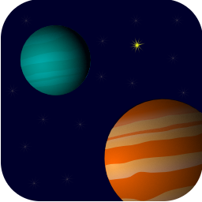

View my design work
Software should be functional, beautiful, and usable. In today's technology-centric world, it is
increasingly important that applications and services are designed to supplement the user's
real-world experiences and supply them with a worry-free way to use the products they love.
Your application's icon is the front door to your product - it is the essence of your service packaged
neatly into a beautiful representation of your brand and hints at the experiences your users will quickly learn to love and trust.
Bright colors, clean lines, and subtle shadows evoke a sense of fun and simplicity.


Designing for the vast varieties of today's devices can be a challenge. Successful products recognize the experiences
and ecosystems their customers use and create fluid experiences tailored to their user's needs. I begin with scalable vector formats for my
icons and graphics using Affinity Designer or
Inkscape, and finalize images and assets using open source image manipulation programs.
Applications should be intuitive and instinctive. It is vital that each app is respectful of
the platform it runs on, presenting the user with an experience that is both delightful and uniquely familiar. I utilize image manipulation tools
to create high-fidelity mockups written directly in code to provide realistic, testable designs for a given platform that are capable
of running direcly on target devices.
With an educational background in computer science, work experience as a Program and Product
Manager, and practice in iconography and visual graphics, I am uniquely positioned as a design architect with the ability
to wear many hats. Usability, accessibility, visual design, and branding should be deeply integrated into every aspect of
an application or service, beginning with the conceptual product designs all the way up to launch and as part of the
evolution of your idea.
My development career began when I chose to take a computer science introduction class on a whim in my sophomore year in
high school. While I spent a good portion of my childhood playing educational games, I hadn't considered what went into making them until I wrote my first
Hello World and it was love at first sight. In reality, my first Hello World program didn't compile - but I was hooked anyway.
2006-2008: Intro to Computer Math / Computer Science at Loudoun County High School
For the first four years of my computer science education, I worked primarily in Java, LabVIEW, and Matlab. When I began college, I learned
systems-level development in C and got my first taste of machine instruction programming languages, building traditional computer tools such
as a Linux shell and an implementation of malloc. Over three summers of internships at Microsoft, I learned C# and integrated UI prototypes with PowerShell cmdlets
to provide a proof-of-concept for what became the Windows MultiPoint Server virtual desktop solutions and the original designs for the IM service
released in the MultiPoint Dashboard.
Summer 2010: Explorer intern with Windows MultiPoint Server at Microsoft
Designed & Built prototype for Hyper-V integration with WMS
Observed Windows Server 2012 usability lab studies for Server Manager
Learned C#, WPF, and C++ for PowerShell integration
Summer 2011: Program Manager intern with WMS at Microsoft
Designed UI prototype for IM functionality for WMS Dashboard
Developed prototype for IM client in C# and WPF
Summer 2012: Program Manager intern with Remote Desktop at Microsoft
Investigated feasibility of implementing modern-style WMS Dashboard
Debugged and proposed hotfix for virtual IP management for Hyper-V sessions
Owned and deployed a MultiPoint Server customer TAP site in Seattle, WA
Managed MultiPoint Server social media channels and developed content
May 2013: Graduated from Virginia Tech with a Bachelors of Science in Computer Science
After graduation, I moved to the SF Bay Area and have been focusing on front-end development and user interface design for websites and
mobile applications. At Microsoft, I have worked closely with developers, designers, and researchers to improve processes and increase
agility practices in rapid-prototyping designs to use in lab usability studies, focusing on iOS and Windows Phone application development. In my
free time, I am currently teaching myself web development in HTML, CSS, and JavaScript.
In addition to my structured coursework at Virginia Tech, I developed curricula for Windows 8 Modern development for Microsoft Surface
in conjunction with the Virginia Tech Mobile Software Engineering Lab as an undergraduate research project, during which I built applications
and wrote their associated tutorials for various Windows 8 apps. In addition to technical research, I also had a chance to work in a
cross-disciplinary communications course that aimed to analyze the effects of virtual environments on society by preparing and submitting
a research proposal to the Virginia Tech IRB.